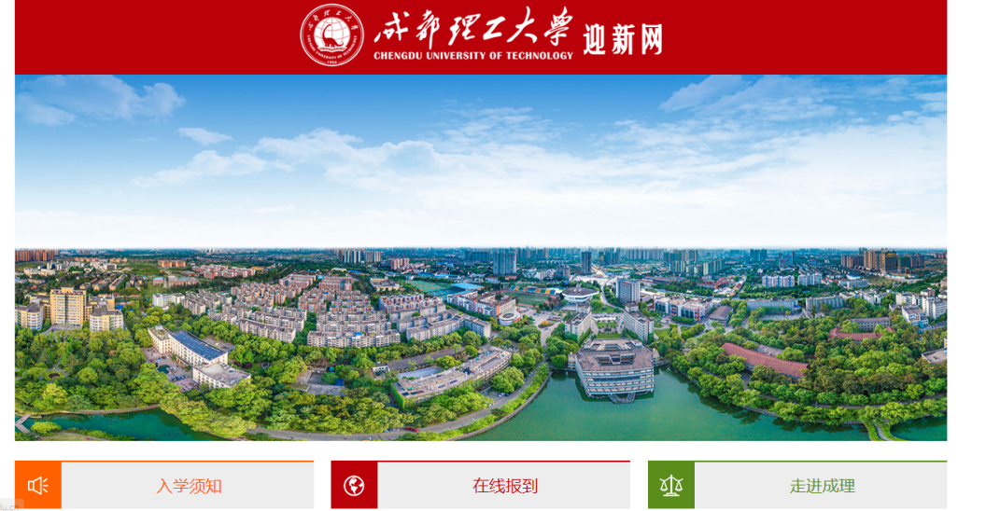
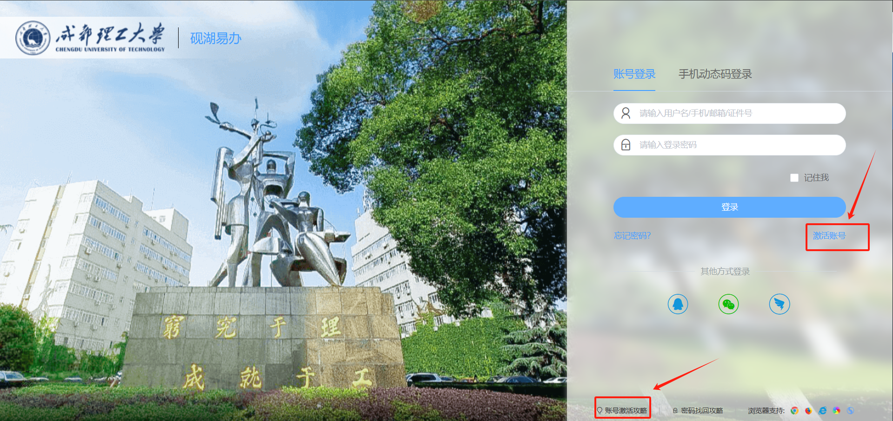
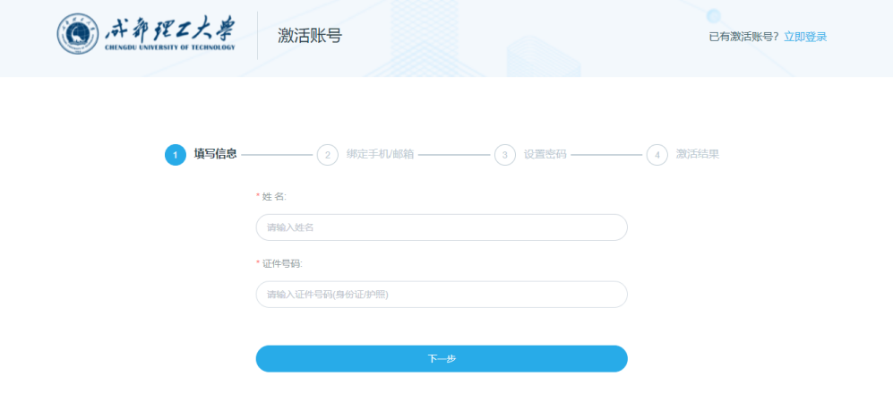
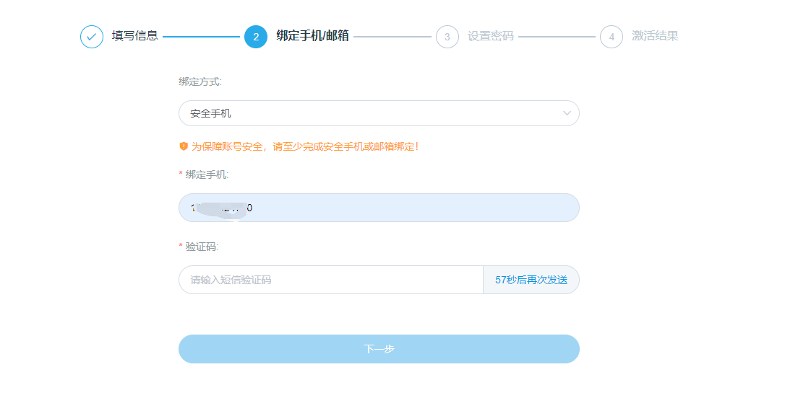
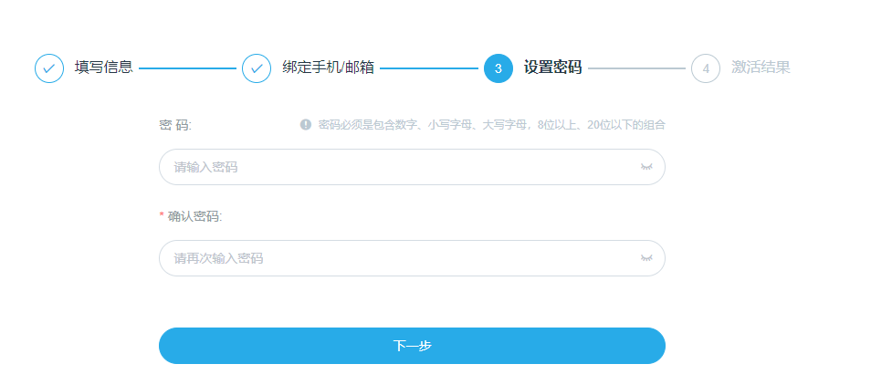
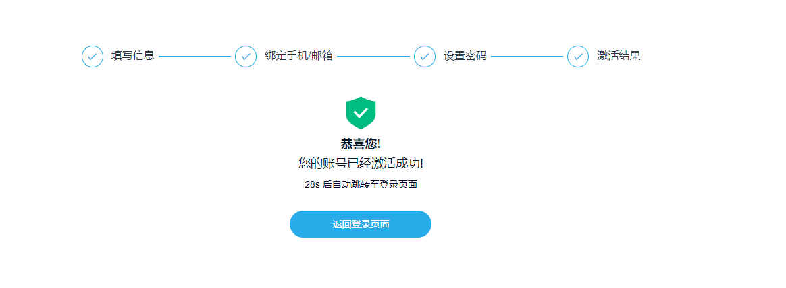

新生统一身份认证账号激活说明
事项编号：06
| 办理方式 | 线上办理 | 事项性质 | 服务事项 |
| 办理途径 | 线上 | 办理时间 | |
| 咨询电话 | 028-84079530 | 监督电话 | 暂无 |
新生进入迎新网：yx.cdut.edu.cn，点击“在线报道”后

1、在登陆页面选择“激活账号”：

2、在激活账号页面输入您的姓名和证件号码：

3、如果您输入的姓名和证件号码与系统记录的一致，进入绑定安全手机页面：
（注意：安全手机是您未来找回密码的依据，请使用自己本人的手机号）

4、输入手机号后，请单击获取验证码，将手机收到验证码输入后点击下一步，设置好密码（密码必须包含大小写字母和 数字并长度不少于8位）

5、显示下页后，账号激活成功，你可以使用账号继续访问学校系统了。

- 服务人群：
- 研究生,学校管理员,教师,兼职教师,学生
- 所属部门：
- 网络与信息化处
- 服务日期：
- 长期有效